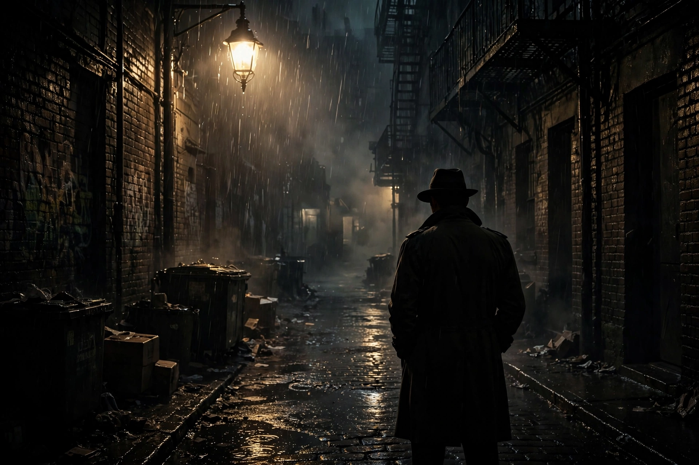

| Crime film | |
|---|---|
 Crime films centre on criminals, detectives, or both | |
| Subgenres | Gangster film, film noir, heist film, police procedural, legal thriller |
| Key periods | 1930s gangster cycle; 1940s–50s film noir; 1970s New Hollywood |
| Key figures | Howard Hawks, John Huston, Francis Ford Coppola, Martin Scorsese |
Crime film is a film genre that focuses on crime and its detection, emphasising the actions and motivations of criminals, law enforcers, or both. Stylistically, the genre may overlap and combine with many other genres, such as drama, the gangster film, and the film noir tradition, and is further subdivided into several subgenres.
Early cinema quickly discovered crime's dramatic appeal: Edwin S. Porter's The Great Train Robbery (1903) is often cited as a proto-crime film. The genre flourished in the 1930s with the Warner Bros. gangster cycle — Little Caesar (1931), The Public Enemy (1931), and Howard Hawks's Scarface (1932) — which drew energy from Prohibition-era headlines and Depression audiences' fascination with outlaw figures.
In the 1940s, crime films darkened into film noir: low-key lighting, fatalistic plots, corrupt cities, and the treacherous femme fatale. Landmarks include The Maltese Falcon (1941), Double Indemnity (1944), and The Big Sleep (1946), many adapted from hard-boiled novels by Dashiell Hammett and Raymond Chandler.
The genre revived in the New Hollywood era with Bonnie and Clyde (1967), The Godfather (1972), and the works of Martin Scorsese, and flourished internationally through French policiers, Hong Kong heroic bloodshed films, and Scandinavian noir. Crime remains one of the most durable and adaptable of film genres.